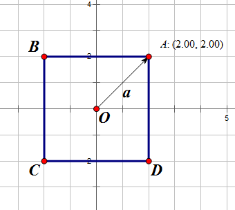
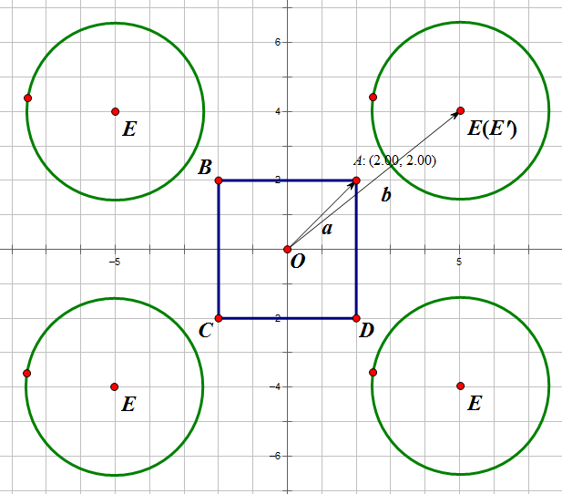
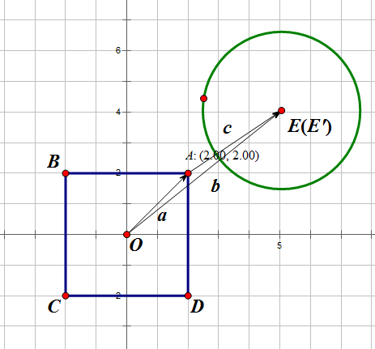
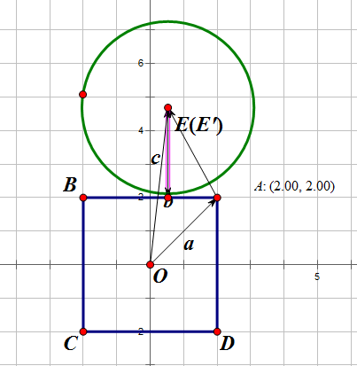
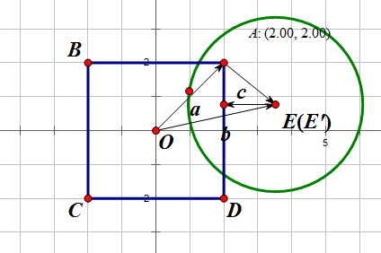

This article is simply a summary from two posts I once wrote on CSDN: https://blog.csdn.net/noahzuo/article/details/52472507, https://blog.csdn.net/noahzuo/article/details/52472507.
Introduction
Collision detection between an AABB and a Sphere is a common case in game physics. Thus it is important to master this algorithm in terms of performance. In this article, three methods are introduced to handle this problem.
Arvo’s Algorithm
Original Algorithm
Jim Arvo has put up with a simple method to solve this problem in Graphic Gems, you can find the code here.
The pseudocode is like:
OVERLAPSPHEREAABB_ARVO(c, r, min, max)
- $d \leftarrow 0$
- for each $i \in { x, y, z }$
- if ($c_i < min_i$)
- $e \leftarrow c_i - min_i$
- $d \leftarrow d + e^2$
- else if ($c_i > max_i$)
- $e \leftarrow c_i - max_i$
- $d \leftarrow d + e^2$
- if ($d \leq r_2$) return true
- return false
This method is simple but fast as well theoretically. But we can make it faster in practice.
Make It Faster
Thomas Larsson presented a faster method in practice: https://doi.org/10.1080/2151237X.2007.10129232
The key is to expand the AABB by r first. If c still locates outside the box, the test failed and returns false directly.
As a result, we save some performance by avoiding calculations ensued.
The pseudocode is like:
OVERLAPSPHEREAABB_QRI(c, r, min, max)
- $d\leftarrow 0$
- for each $i\in {x, y, z }$
- if $((e \leftarrow c_i - min_i) < 0)$
- if $(e < -r)$ return false
- $d \leftarrow d + e^2$
- else if $((e\leftarrow c_i - max_i) > 0)$
- if $(e > r)$ return false
- $d \leftarrow d + e^2$
- if ($d \leq r_2$) return true
- return false
This is called QRI(quick rejections interwined). Of course we can do it at the very beginning, and this variant is called QRF(quick rejections first).
Eliminate Conditional Branch
Even most modern computer has implemented branch prediction mechanism, we still consider a condition branch is expensive and should be avoid as much as possible.
Thus QRI can be refactored as:
- $d\leftarrow 0$
- for each $i \in { x, y, z }$
- $e \leftarrow max(min_i - c_i, 0) + max(c_i - max_i, 0)$
- if $(e \leq r)$ return false
- $d \leftarrow d + e^2$
- if $(d \leq r^2)$ return true
- return false
As we can see, the algorithm can take good advantage of max instruction, which is super fast on most SIMD instruction set.
Even Faster
So there is an even faster method:
First, we shift the origin to the center of the rectangle. And let a be the vector pointing from the origin to the rectangle-corner in the first quadrant:

We flip the circle center E to the first quadrant E'by axis flipping, no matter which quadrant E locates. And let b be the vector from the origin to E':

And here is the magic: Let c be the vector pointing from A to E', and set c‘s all negative element to 0:
$x \geq 0, y \geq 0$:

$x < 0, y > 0$:

$x < 0, y \geq 0$:

$x < 0, y < 0$:
$$c = (0, 0)$$
Then we simply compare the length of r and c:
Intersection if $c < r$
Tangency if $c = r$
- Separation otherwise
1 | bool Intersection(float2 c, float2 h, float2 p, float r) |
This method can be easily expanded to higher dimensions, and is really fast.